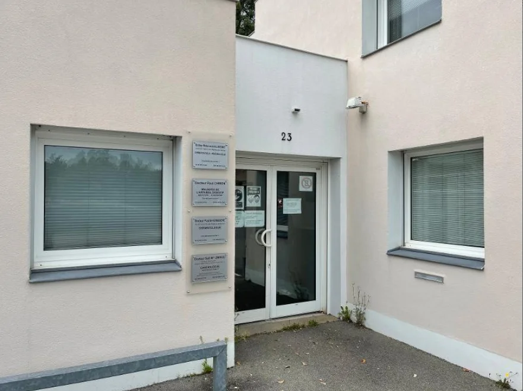

Cardiologue & Maladies Vasculaires · Pornic & Nantes
Votre santé cardiovasculaire,
Votre santé cardiovasculaire,
notre priorité absolue.
Bienvenue sur le site du cabinet de cardiologie du Docteur Safi Med Zmouli. Nous vous accueillons sur nos sites de Pornic et de Nantes pour des bilans complets, un suivi personnalisé et des examens spécialisés de pointe.
- RDV en ligne 24h/24 via Maiia
- Secrétariat : 02 40 82 27 57
- Nouveaux patients acceptés


Dr. Safi Med ZMOULICardiologue · RPPS 10100590727